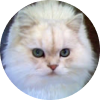

Thoughts from future #nostrasia participants & people in the nostr community
I love Nostr because it is a place of enduring possibilities, a place of freedom that we can develop ourselves without limit!Kojira
Speaker @Nostrasia
Nostr allows me to design and build what I've never been able to even imagine before. 🐶🐾🫡
Fishcake
Speaker @Nostrasia
I love nostr because, in the same sense that Lightning is the internet of money, nostr is the internet of social media!
It's a very powerful system because it's the complete opposite of a walled garden. It's also very fun :)Kwinten
Speaker @Nostrasia
Travelling around the world using Freedom money (bitcoin) and finding it's use case is only possible with freedom of speech, no algorithm! Just you in the digital realm with a voice!
Paco
Speaker @Nostrasia
 NOSTR.WORLD
NOSTR.WORLD